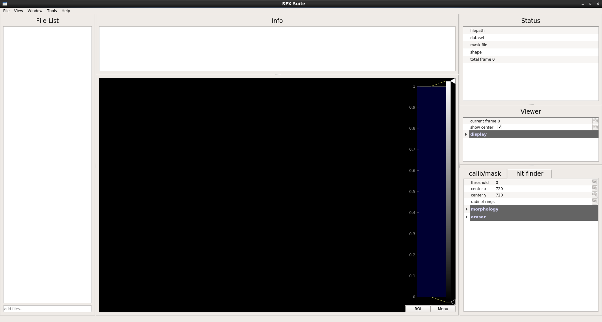
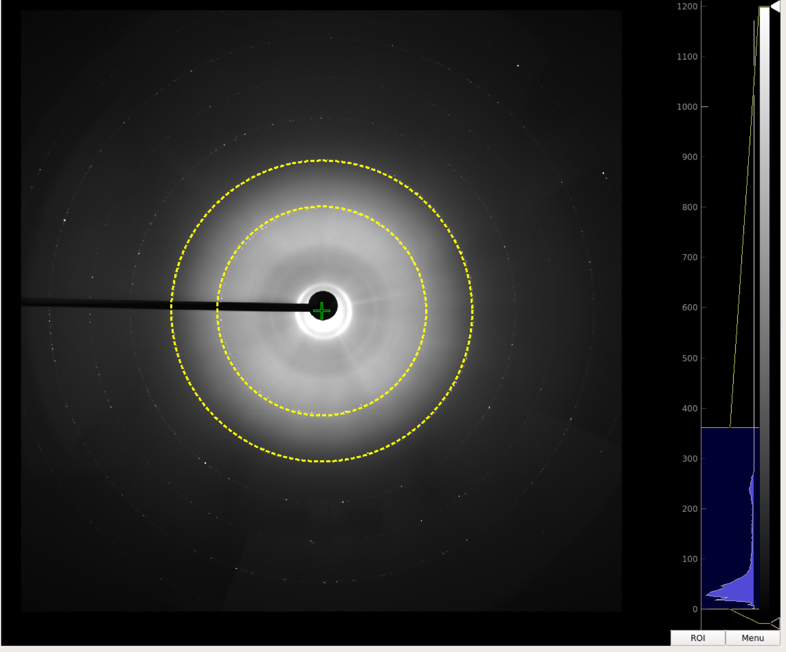

Main window is the most versatile module. Users can view scientific data in format of npy, npz, h5 (cxi is also hdf5 format, but designed with set of rules), build mask, generate peak powder, make basic calibration and most importantly, tune parameters for hit finding. Even if you are only interested in visulization, you can still try with this module.

Main window consistes of File List, Info Panel, Status Panel, Viewer Panel, Parameter Tuning Panel and Image Viewer. Since main window is based on data visualization, the central part image viewer plays the most important role to display image data and flexiable interaction support via mouse(thanks to pyqtgraph).
Actually, there are 3 image viewers in main window. Usually users only see one – raw image viewer, which displays the original data of the specified file and dataset. Sometimes people may be interesed in another two viewers: calib/mask viewer (for calibration and mask building) and debug viewer (for debugging). Users can go to View tab in menu bar to show or hide these two viewers.
In any viewer, users can zoom in/out or move image very easily. Besides, features include:
File list stores all the files in current session. To add new file(s) to file list, you can:
Once you have file items in file list, you can right click one or some of them, then you can select action in the pop-up menu.
Info panel displays information with timestamp while SFX-Suite is running, so users don’t need switch to terminal for debugging.
Status panel shows basic information of current file, including filepath, dataset, mask file, image shape and number of frames.
Viewer panel gives user some basic control of image viewer to:
Parameter tuning panel consists of calib/mask and hit finder tabs, giving user quick and real-time response of corresponding task.
To determine the center of images, usually we calculate mean/sigma image or peak powder from multiple data file, which can be done easily via file list. Once the prepration work is done, load the file and edit radii of rings (in pixels and separated by commas) to add some rings to match circles in raw image viewer. You can tune the center x/y to fit the experimental data.

To make mask, it’ll be helpful to look at the calib/mask viewer. Click View -> Show Calib/Mask View to open second image viewer at right of the raw image viewer. The calib/mask viewer displays binary image where 0 means invalid, and 1 means valid pixel.
The mask is generated by 3 steps.
Note: The eraser mask is generated in real-time, you users’d better disable morphology mask while making eraser mask. Make morphology mask and eraser mask one by one, then combine them in file list.
Hit finder tag provides core function for SFX data preprocessing. Users can tune hit finding parameters and get response in real time.
Check hit finding on to enable real-time hit finding, and check mask on to apply mask in hit finding. You can also find more algorithm details here.